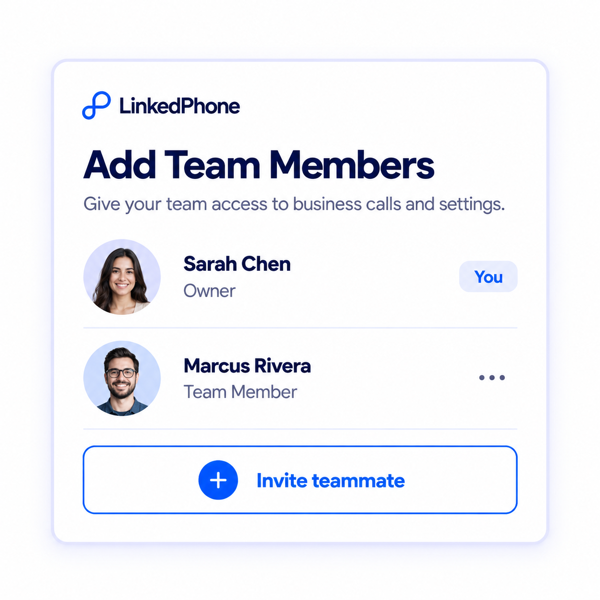
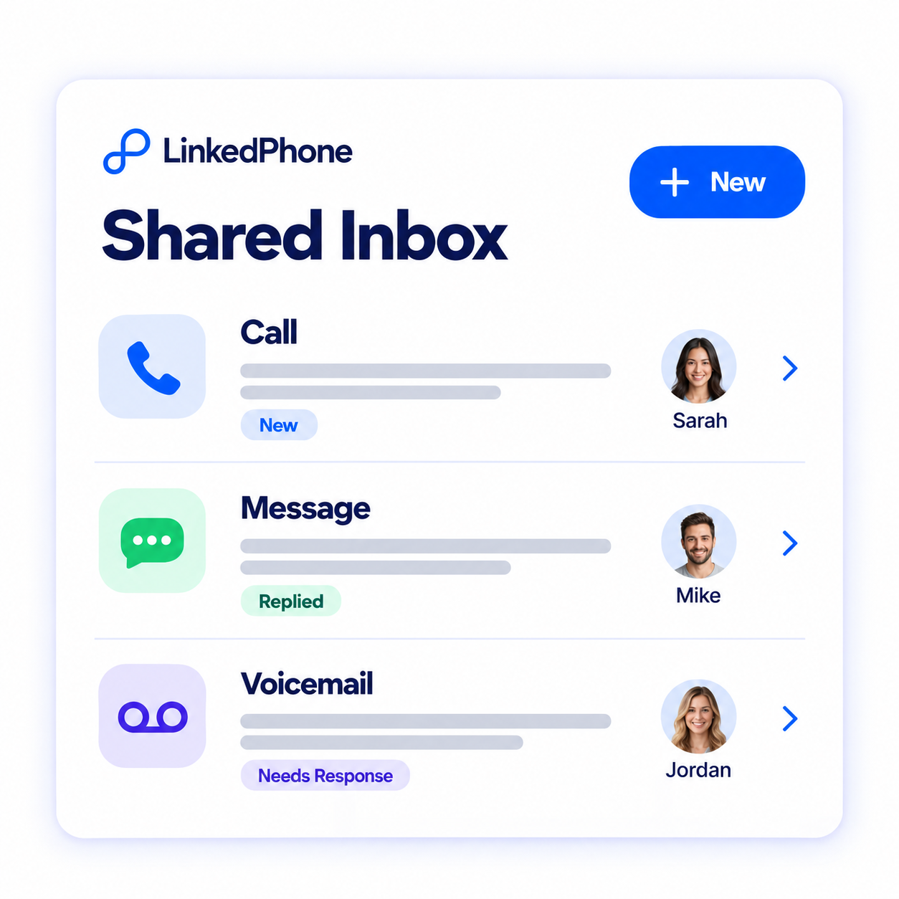

One number. Your whole team. Hi {{first_name}}, LinkedPhone works whether you’re solo or running a team. With a team, it’s easy to pick up where someone else left off.
Your team can share one business phone number for calls, texts, and customer service. Everyone stays connected, and customer context stays in one place. Here are three things to know:
Invite the people who help you run your business. Each team member gets access to the mobile app and LinkedPhone Web. | |  |
|
Your team can make and receive calls and send and receive texts, all from the same business number. Customers see one consistent number, no matter who on your team is helping them. | | |
|
No more “let me catch you up.” Calls, texts, and voicemails come together in one shared inbox, so your team always has the full context. Everyone can see what happened, who responded, and who took the call, so anyone can pick up where someone else left off. | |  |
|
That's how a small team delivers service that feels big, coordinated, and personal.
  | | What do team members have access to?Customer interactions are shared, including calls, texts, contacts, and tickets. Team members do not have access to admin controls like Auto Attendant and other business-level settings. |
| | What if a team member is off?Have the team member set their status to "Offline" in the app. If they use their phone's Do Not Disturb or Airplane Mode instead, their personal voicemail can answer the business call before it reaches the rest of your team. |
  | | Tomorrow: Learn about the AI tools and time-savers that take the busywork off your plate. |
Need a hand? We're here to help.
support@linkedphone.com
+1 (877) 538-5888 Glad to have you on board,
Team LinkedPhone |